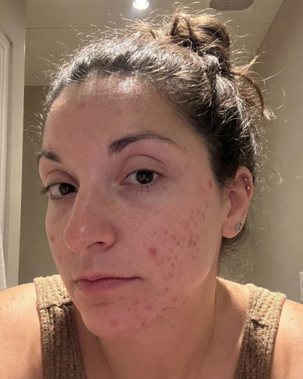
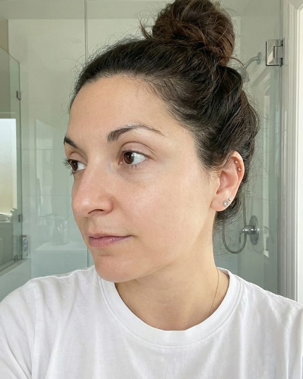
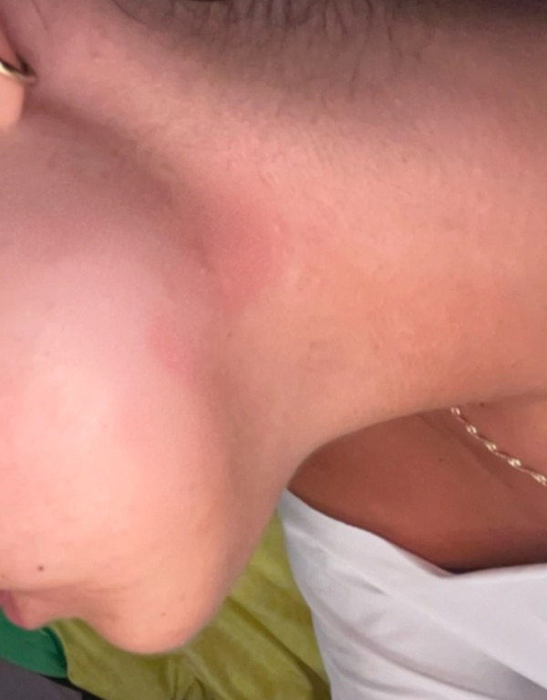
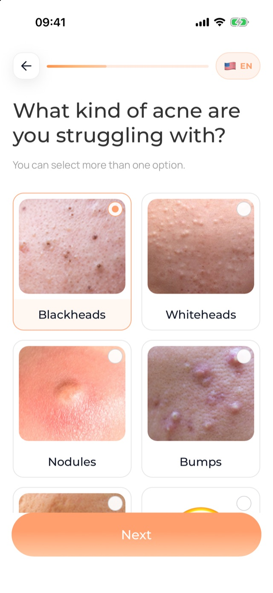
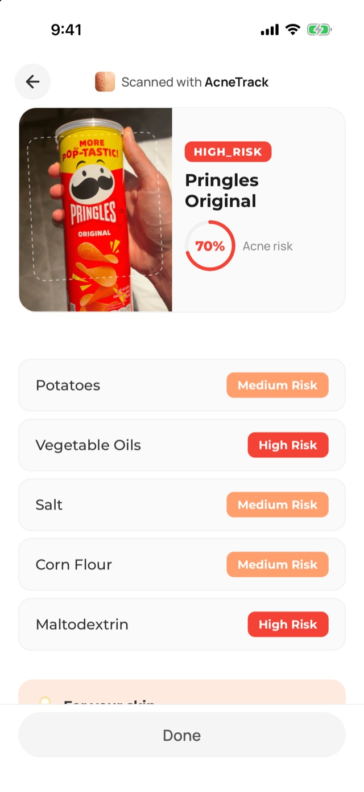
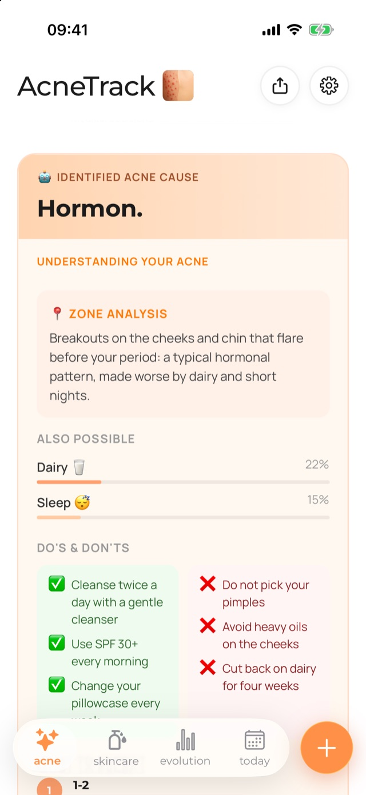
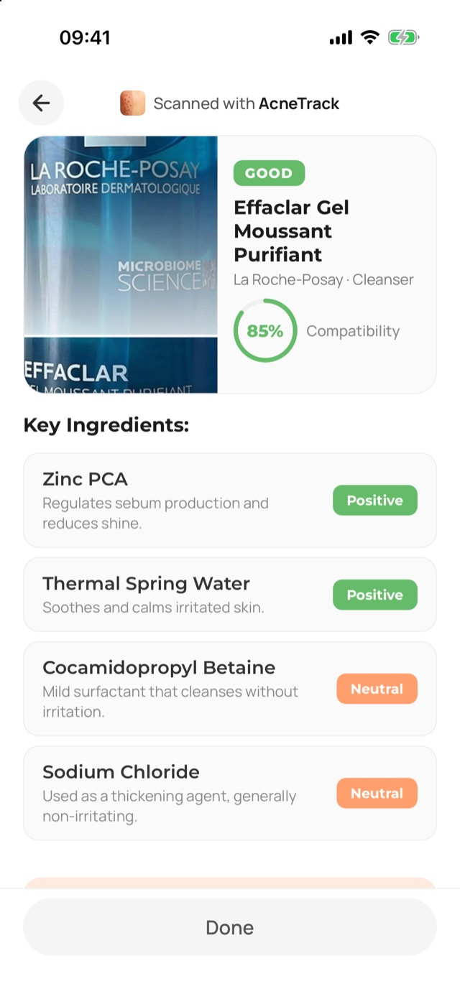
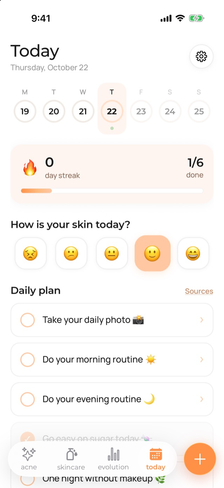
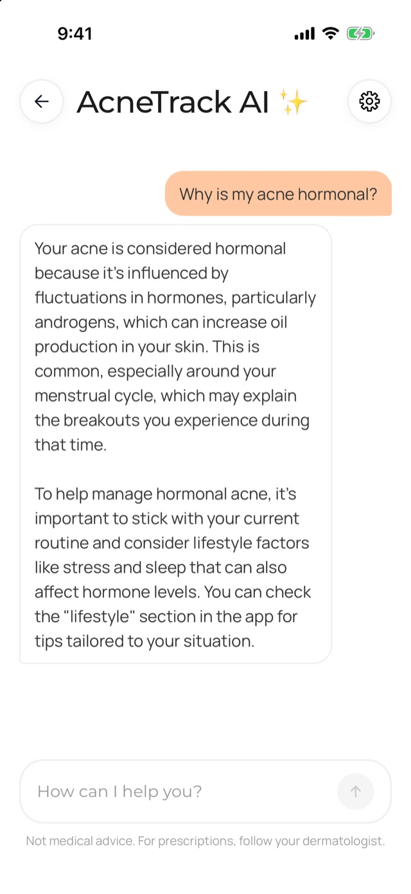

Analyzing your profile…
Finding acne causes…
Building your tailored plan…
Scan your face
The AI analyzes your skin in seconds
Scan your face, and the AI builds a tailored plan to get rid of your acne.
Free · 2 minutes · iOS & Android



The AI analyzes your skin in seconds

We learn your situation to personalize your plan

A plan designed to get rid of your acne
Analyses, routine, scanners, coach and personalized tracking in one place.
Your profile and your face scan are checked against 20+ factors. You get the most likely cause of your acne, with what backs it up, and your plan adapts. The more you use the app, the sharper the analysis.

Spot scans run on CE-marked medical software (ISO 13485). AcneTrack does not replace a dermatologist.
A photo and a rating of your skin every day, then compare before and after. Your full tracker, in one place.
Take a photo of your meal: you instantly know if it's good for your skin.
Check if a product suits your skin, before or after you buy it.

Every day, simple actions to check off to stay on track.

Like ChatGPT, but better: AcneTrack AI knows your skin, your cause, your routine and your history.
My period starts in 3 days, what should I do?
Your acne is hormonal, so this is the week it flares. Keep your routine, use your niacinamide every evening and skip dairy until Sunday.
Can I add a new serum to my routine?
It works with your CeraVe cleanser and your niacinamide. Start with evenings only, every other day for the first week.
Why do I have a new pimple on my chin?
Your diary shows two nights under 6 hours this week, and the chin is your hormonal zone. Don't touch it: it should go in 4 to 6 days.

900+ ratings on the App Store
I have severe acne and already see a dermatologist. This app turned out to be a great complement: it recommended the same things as my derm, explained more, and tracks whether my products actually help.
I had really bad acne for years and thought nothing would help anymore. The app followed me for months, I could track my progress and got great tips. All in one place.
It tells you what's causing your acne, what to do about it and what to do every day. Really great.
I've been using this app for a while and I can already see changes.
An amazing app for anyone struggling with acne.
A great way to follow and improve your skin. Clean, super intuitive. Very satisfied!
Top app for tracking the acne I'm so self-conscious about. Thank you.
Honestly, the app is really well made. It genuinely helps.
Your analysis is free and takes 2 minutes.
You scan your face and answer a few questions about your skin and your daily life. AcneTrack uses both to build your anti-acne plan: the likely cause of your acne, a routine made for your skin, and the tools to follow it day after day.
No, finding it is the point. Your answers and your face scan are enough for AcneTrack to name a likely main cause out of the twenty-plus factors it weighs. That reading sharpens as you use the app.
Your photos are stored in a private, access-controlled space and used only for your analysis. They are never shared or sold, and they are deleted with your account whenever you ask.
Skin renews itself over roughly four to six weeks, so real change rarely shows up sooner. Most users who follow their plan see measurable change after eight to twelve weeks.
No. AcneTrack helps you understand and follow your skin. Severe or hormonal acne often needs medical treatment: see a dermatologist, and bring your progress photos.
The face scan and the questionnaire are free. The full plan and the tools are part of a subscription you can cancel anytime from your App Store or Google Play account.
Another question? contact@acne-track.com